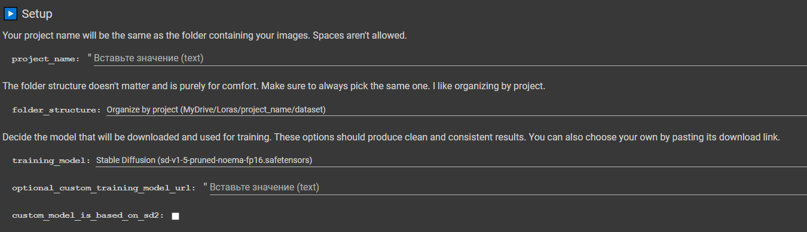

Instructions for Users with Poor PCs (Google Colab Instructions)
Step 0 (for those who've choosen first way of gathering dataset): Create on your GDrive following structure of folders:
Step 1: Click on this link
Step 2: Copy my settings:

size_of_your_lora = network_dim * 1.125
Step 3: Start every cell one by one and download your LoRA/LyCORIS from GDrive when training process will be /finished